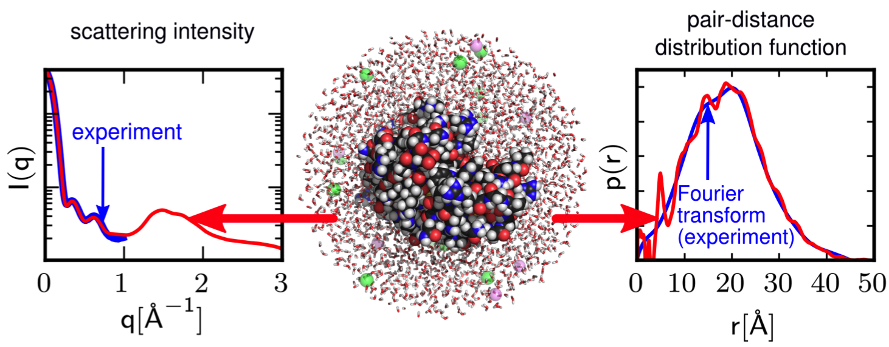

Capriqorn documentation¶
Introduction¶
CAPRIQORN: CAlculation of P(R) and I(Q) Of macRomolecules in solutioN.
Capriqorn is a software suite designed to facilitate the calculation of quantities such as pair-distance distribution functions and scattering intensities directly from the output trajectories of molecular dynamics simulations. In particular, Capriqorn implements the methods published in the following publication:
For your convenience, we provide citations in bibtex format and endnote format.
Additionally, a novel method for non-spherical observation volumes using virtual particles has been implemented (manuscript in preparation).
Capriqorn is mostly implemented in Python with time-critical kernels accelerated using compiled Cython code. The distance histogram calculation is done via the Cadishi package which offers high-performance parallel implementations for the CPU and the GPU.
Requirements¶
Capriqorn runs on Linux and OS X platforms. In particular, the following software packages are required.
- Capriqorn requires a Python 2.7 installation including the NumPy, SciPy, Cython, h5py, and PyYAML modules. We have successfully used the Anaconda Python Distribution which provides all these modules out of the box. Moreover, to compile the Cython kernels, a recent GCC installation is required.
- Capriqorn requires the Cadishi Python package to perform fast distance histogram calculations on CPUs and GPUs.
- Capriqorn requires the MDAnalysis Python library, in particular its data reader which supports various file formats from molecular dynamics simulation codes.
- Optionally and for convenience, a HDF5 viewer (such as HDFView or HDF Compass) is useful to be able to quickly inspect the HDF5 files generated by Capriqorn.
Installation¶
The package comes with a standard Python setup.py installer. It is installed e.g. as follows into the user’s homedirectory:
python setup.py install --user
In this case, setup.py copies the Cadishi files into the directory ~/.local.
Make sure that your PATH environment variable contains the directory
~/.local/bin. To perform a system-wide installation omit the --user
flag (and prefix the command with sudo to gain administrative privileges on
a typical Linux system).
Quick Start¶
To run the example analysis pipeline that comes with Capriqorn please issue the following sequence of commands:
capriq example # generate example parameter files
capriq preproc # run preprocessor
capriq histo # run distance histogram calculation
capriq postproc # run postprocessor
Basic workflow¶
Capriqorn implements the concept of a data processing pipeline. A typical workflow consists of three stages.
- preprocessor run: Read MD trajectory, apply methods, write to single HDF5 file.
- distance histogram calculation: Read frames from HDF5 file, compute histograms, write to HDF5 file.
- postprocessor run: Read histograms from HDF5 file, perform computations (PDDF), write to HDF5 file.
The data processing pipeline is implemented using Python generators. Methods (computations, geometry and data modifications, etc.) are considered ‘filters’.
Documentation¶
Technical Features¶
Capriqorn provides – but is not restricted to – the following functionalities:
- versatile read-in of MD trajectories in various formats
- trajectory preprocessing
- high-performance parallel distance histogram calculation on CPUs and GPUs using the Cadishi package
- histogram postprocessing
- efficient data handling using HDF5 files
Source documentation¶
To be done via docstrings after re-structuring of the code base.
License and Citation¶
Capriqorn is released under the GPLv2 license. See the file
LICENSE.txt for details.
Copyright 2015-2017
- Jürgen Köfinger, Max Planck Institute of Biophysics, Department of Theoretical Biophysics, Max-von-Laue-Straße 3, 60438 Frankfurt am Main, Germany, juergen.koefinger@biophys.mpg.de
- Klaus Reuter, Max Planck Computing and Data Facility, Gießenbachstraße 2, 85748 Garching, Germany, klaus.reuter@mpcdf.mpg.de
- Max Linke, Max Planck Institute of Biophysics, Department of Theoretical Biophysics, Max-von-Laue-Straße 3, 60438 Frankfurt am Main, Germany, max.linke@biophys.mpg.de